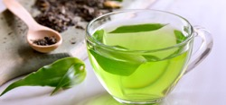
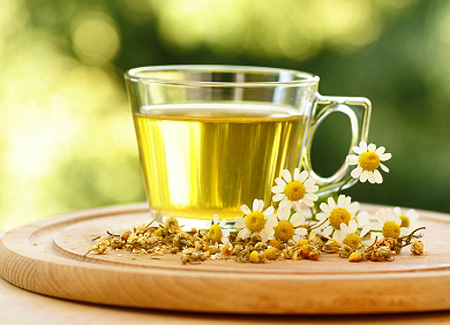

All About Tea
This page is all about TEA and the basic flavors you will find!
What is tea?
Wikipedia defines tea as: an aromatic beverage prepared by pouring boiling water over cured leaves.
Tea is great for drinking hot or cold. Tea is also a good substitute for coffee. Although, some tea such as green tea, can have the same amount of caffeine as a cup of coffee.
What are common tea flavors?
There are many types of tea, but we will cover some general flavors you can run into when ordering a cup.
Black tea - Earl Grey, English Breakfast
Green tea - Jasmine, Oolong
Herbal tea - Chamomile, Peppermint
| Green | Black | Herbal |
|---|---|---|
|
|
|
learn more about tea here!
Here is another good tea site. There are a lot of things that make this site really good. There are styles and javascript to make it look nicer than the index.html I created. It is also a blog that reviews so it has a lot of history and site details